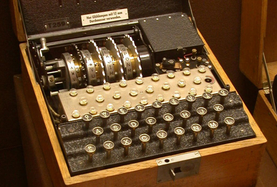

Alan Turing's Role In World War 2
Alan Turing may be most famous for his contribution to breaking the German enigma codes during World War 2. During the war, Turing worked for the Government Code and Cypher School (GC&CS) at Bletchley Park, Britain's codebreaking centre that produced Ultra intelligence. For a time he led Hut 8, the section that was responsible for German naval cryptanalysis. Here, he devised a number of techniques for speeding the breaking of German ciphers, including improvements to the pre-war Polish bomba method, an electromechanical machine that could find settings for the Enigma machine. Turing played a crucial role in cracking intercepted coded messages that enabled the Allies to defeat the Axis powers in many crucial engagements, including the Battle of the Atlantic.
Effects Of Cracking The Enigma
Although Polish mathematicians had worked out how to read Enigma messages and had shared this information with the British, the Germans increased its security at the outbreak of war by changing the cipher system daily. This made the task of understanding the code even more difficult. Turing played a key role in this, inventing, along with fellow code-breaker Gordon Welchman, a machine known as the Bombe. This device helped to significantly reduce the work of the code-breakers.
The German military used the Enigma to direct army, naval, and air movements in all theatres of conflict. From mid-1940, German signals were being read at Bletchley and the intelligence gained from them was helping the war effort. Cracking the Enigma machine gave the Allies a key advantage, with many analysts beleiving that cracking the Enigma shortened the war as much as two years.

Hugh Alexander, a cryptanalyst who worked alongside Turing said of him:
"There should be no question in anyone's mind that Turing's work was the biggest factor in Hut 8's (the section that was responsible for German naval cryptanalysis) success. In the early days, he was the only cryptographer who thought the problem worth tackling and not only was he primarily responsible for the main theoretical work within the Hut, but he also shared with Welchman and Keen the chief credit for the invention of the bombe. It is always difficult to say that anyone is 'absolutely indispensable', but if anyone was indispensable to Hut 8, it was Turing."